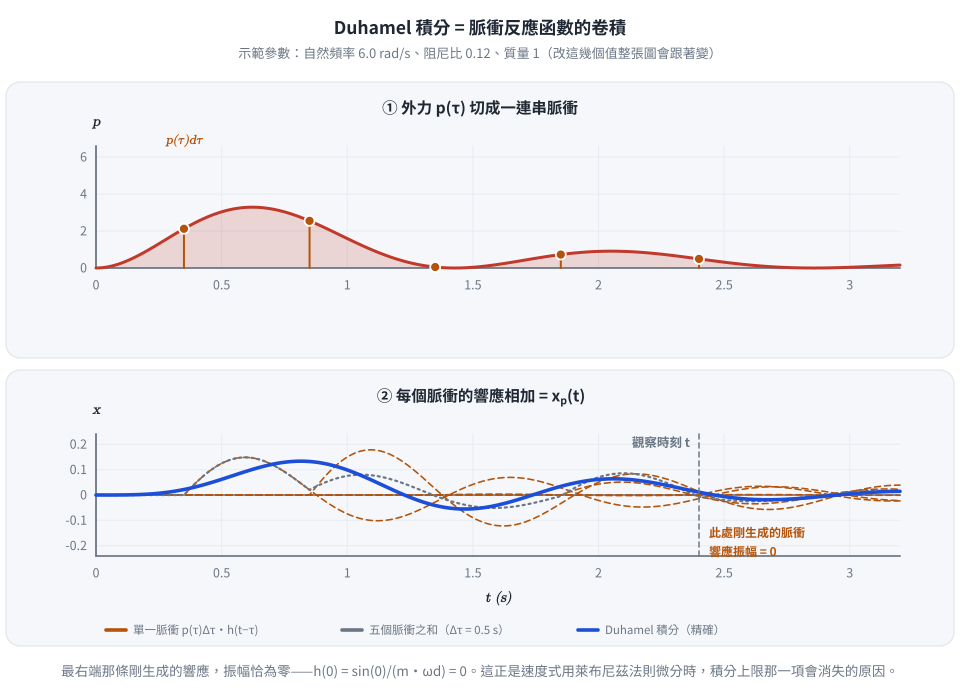
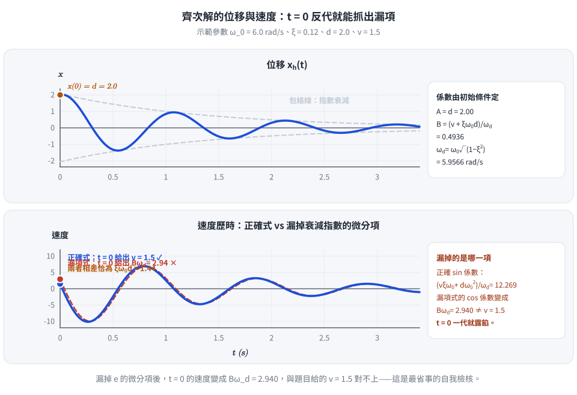
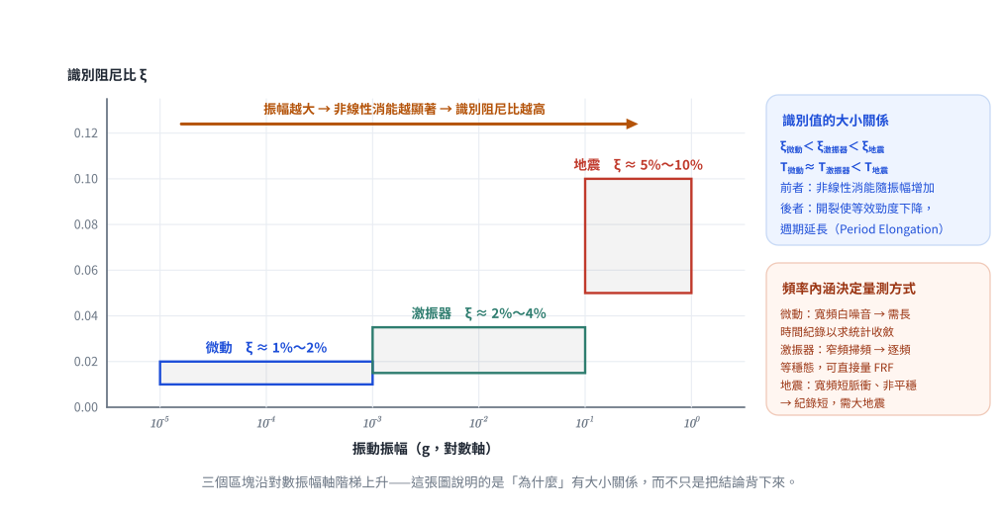

考題編號：SD-2006-1
主分類： SD-U1-1 結構動力基本性質及原理
副分類： SD-U1-3 單自由度、多自由度系統之動態分析及應用
分析方法： SDOF動力分析
標籤： Duhamel積分 脈衝反應函數 位移反應歷時 速度反應歷時 系統識別 振態週期 阻尼比識別 微動 激振器 地震
1. 原始題目重述 (Problem Restatement)
子題 (一)（10分）
單自由度（SDOF）低黏滯阻尼系統，參數如下：
- 質量：$m$
- 阻尼係數：$c$
- 勁度：$k$
- 初始位移：$d$（即 $x(0) = d$）
- 初始速度：$v$（即 $\dot{x}(0) = v$）
- 外力：$p(t)$
試以 Duhamel 積分式列出系統的位移反應歷時 $x(t)$ 與速度反應歷時 $\dot{x}(t)$。
子題 (二)（12分）
結構系統的振態週期和阻尼比可由實測紀錄識別，振動源有三種：微動、激振器和地震。
就三種振動源的頻率內涵，說明識別所需實測紀錄有何不同，並比較三種實測紀錄所得振態週期和阻尼比識別值的大小。
2. 考題核心精神與出題者意圖 (Core Concepts & Examiner's Intent)
子題 (一)
Duhamel 積分是 SDOF 系統在任意外力作用下求解位移的核心工具，本題要求同時寫出位移與速度兩個反應歷時，測驗考生能否正確區分：
- 齊次解（自由振動部分）：由初始條件 $d, v$ 決定
- 特解（受迫振動部分）：由外力 $p(t)$ 透過 Duhamel 積分決定
陷阱：忘記速度歷時需要對位移 Duhamel 積分再微分，或直接對整式微分而忽略積分上限的導數貢獻。
子題 (二)
系統識別（System Identification）是結構健康監測的核心議題。三種振動源能量頻率分布不同，直接影響：
- 識別所需紀錄長度與訊號品質
- 識別出的週期與阻尼比數值大小（因振幅相關的非線性效應）
出題者測驗考生對「小振幅線性行為 vs 大振幅非線性行為」的物理判斷。
3. 解題戰略地圖與陷阱分析 (Strategic Roadmap & Trap Analysis)
子題 (一) — 戰略地圖
步驟順序：
- 寫出運動方程式
- 定義系統參數 $\omega_0, \xi, \omega_d$
- 寫出完整解 = 齊次解（自由振動）+ 特解（Duhamel積分）
- 套入初始條件，決定齊次解係數
- 對位移解微分，得速度歷時
關鍵陷阱：
-
陷阱①：速度 Duhamel 積分的萊布尼茲法則 位移特解 $x_p(t) = \frac{1}{m\omega_d}\int_0^t p(\tau) e^{-\xi\omega_0(t-\tau)}\sin[\omega_d(t-\tau)]\,d\tau$ 對 $t$ 微分時，積分上限本身也是 $t$，需用萊布尼茲公式，積分上限貢獻為 $\frac{p(t)}{m\omega_d}\cdot\sin(0)=0$，所以上限貢獻項消失，只需對積分核心微分即可。
-
陷阱②：初始條件代入對象 初始條件要代入「完整解」（齊次解 + 特解），而在 $t=0$ 時特解為零，故係數由純齊次解決定。
-
陷阱③：$\omega_d$ vs $\omega_0$ 有阻尼時，衰減振盪頻率為 $\omega_d = \omega_0\sqrt{1-\xi^2}$，低阻尼下才可近似 $\omega_d \approx \omega_0$。本題明確說「低黏滯阻尼」，但正式答案仍應保留 $\omega_d$。
-
陷阱④：速度公式遺漏衰減指數微分項 齊次解微分時，$e^{-\xi\omega_0 t}$ 的微分會帶出 $-\xi\omega_0$，此項不可遺漏。
子題 (二) — 戰略地圖
分析三種振動源 → 比較頻率內涵 → 推論識別結果差異
3.5 變數層次分析（Variable Hierarchy Analysis）
複習提示：第一次解題後，在每個卡住的知識點旁標記
⚠；第二次複習時只看有⚠的項目。
最終目標
寫出含初始條件與任意外力 p(t) 的 SDOF 完整位移與速度反應歷時公式
本題關鍵公式（依計算順序）
$$\text{Step 1: } \omega_0 = \sqrt{k/m},\quad \xi = \frac{c}{2m\omega_0},\quad \omega_d = \omega_0\sqrt{1-\xi^2}$$
$$\text{Step 2（齊次解）: } x_h(t) = e^{-\xi\omega_0 t}\!\left[A\cos(\omega_d t) + B\sin(\omega_d t)\right]$$
$$\text{Step 3（特解，Duhamel積分）: } x_p(t) = \frac{1}{m\boxed{\omega_d}}\int_0^t p(\tau)\,e^{-\xi\omega_0(t-\tau)}\sin[\boxed{\omega_d}(t-\tau)]\,d\tau$$
$$\text{Step 4（完整解）: } x(t) = x_h(t) + x_p(t)$$
$$\text{Step 5（初始條件決定係數）: } A = d,\quad B = \frac{v + \xi\omega_0 d}{\boxed{\omega_d}}$$
$$\text{Step 6（位移歷時完整式）: 代入 }A, B\text{ 整合}$$
$$\text{Step 7（速度歷時）: } \dot{x}(t) = \frac{d}{dt}x_h(t) + \frac{d}{dt}x_p(t)$$
L1：題目直接給定
| 符號 | 數值 | 說明 |
|---|---|---|
| $m$ | $m$ | 質量 |
| $c$ | $c$ | 阻尼係數 |
| $k$ | $k$ | 勁度 |
| $x(0)$ | $d$ | 初始位移 |
| $\dot{x}(0)$ | $v$ | 初始速度 |
| $p(t)$ | $p(t)$ | 任意外力 |
L2：需知識點推導
Step 1：基本系統參數
| 符號 | 公式/來源 | 卡關? |
|---|---|---|
| $\omega_0$ | $\sqrt{k/m}$ | |
| $\xi$ | $c/(2m\omega_0)$ | |
| $\omega_d$ | $\omega_0\sqrt{1-\xi^2}$ |
Step 2–3：完整解架構
| 符號 | 公式/來源 | 卡關? |
|---|---|---|
| $x_h(t)$ | $e^{-\xi\omega_0 t}[A\cos\omega_d t + B\sin\omega_d t]$ | |
| $x_p(t)$ | Duhamel積分 $\frac{1}{m\omega_d}\int_0^t p(\tau)e^{-\xi\omega_0(t-\tau)}\sin[\omega_d(t-\tau)]d\tau$ |
Step 4–5：初始條件代入
| 符號 | 公式/來源 | 卡關? |
|---|---|---|
| $A$ | $x(0) = d$ | |
| $B$ | $(v + \xi\omega_0 d)/\omega_d$ |
Step 6–7：速度歷時
| 符號 | 公式/來源 | 卡關? |
|---|---|---|
| $\dot{x}_h(t)$ | 對 $x_h$ 微分，注意 $e^{-\xi\omega_0 t}$ 微分帶出 $-\xi\omega_0$ | |
| $\dot{x}_p(t)$ | 對 Duhamel 積分微分，萊布尼茲公式，上限項 $\sin(0)=0$ 消失 |
L3：深層知識（不懂就卡住）
| 知識點 | 說明 | 卡關? |
|---|---|---|
| 脈衝反應函數 $h(t)$ | $h(t-\tau) = \frac{1}{m\omega_d}e^{-\xi\omega_0(t-\tau)}\sin[\omega_d(t-\tau)]$，Duhamel積分本質是卷積 | |
| 萊布尼茲積分微分法則 | $\frac{d}{dt}\int_0^t f(t,\tau)d\tau = f(t,t) + \int_0^t \partial_t f(t,\tau)d\tau$；此處 $f(t,t)=0$，故上限項消失 | |
| 低阻尼近似的邊界 | $\xi < 0.2$ 時 $\omega_d \approx \omega_0$（誤差 $< 2\%$）；考試若未特別說明，仍保留 $\omega_d$ 較嚴謹 |
4. 步驟化詳細計算過程 (Step-by-Step Detailed Calculation)
子題 (一)：Duhamel 積分解
Step 1：定義系統參數
$$\omega_0 = \sqrt{\frac{k}{m}}, \qquad \xi = \frac{c}{2m\omega_0} = \frac{c}{2\sqrt{km}}, \qquad \omega_d = \omega_0\sqrt{1-\xi^2}$$
（$\xi < 1$ 是欠阻尼條件，$\omega_d$ 才為實數；題目所稱「低黏滯阻尼」是更強的 $\xi \ll 1$， 但以下推導全程不需要用到這個近似，$\omega_d$ 一律保留。）
Step 2：運動方程式
$$m\ddot{x}(t) + c\dot{x}(t) + kx(t) = p(t)$$
改寫為標準型：
$$\ddot{x}(t) + 2\xi\omega_0\dot{x}(t) + \omega_0^2 x(t) = \frac{p(t)}{m}$$
Step 3：完整解 = 齊次解 + 特解
齊次解（自由振動衰減）：
$$x_h(t) = e^{-\xi\omega_0 t}\left[A\cos(\omega_d t) + B\sin(\omega_d t)\right]$$
特解（Duhamel 積分——任意外力受迫振動）：
$$x_p(t) = \frac{1}{m\omega_d}\int_0^t p(\tau)\,e^{-\xi\omega_0(t-\tau)}\sin\!\left[\omega_d(t-\tau)\right]d\tau$$
完整位移解：
$$x(t) = e^{-\xi\omega_0 t}\left[A\cos(\omega_d t) + B\sin(\omega_d t)\right] + \frac{1}{m\omega_d}\int_0^t p(\tau)\,e^{-\xi\omega_0(t-\tau)}\sin\!\left[\omega_d(t-\tau)\right]d\tau$$

圖 1 Duhamel 積分的物理內容：把外力切成脈衝、每個脈衝各自產生一段衰減正弦、再全部疊加。最右端那條剛生成的響應振幅恰為零（$h(0) = \sin 0/(m\omega_d) = 0$）——這正是速度式用萊布尼茲法則微分時，積分上限那一項會消失的原因。
Step 4：代入初始條件求係數 $A, B$
在 $t=0$ 時，$x_p(0)=0$（積分下限等於上限），$\dot{x}_p(0)=0$（同理），故初始條件完全由齊次解決定：
$$x(0) = A = d \implies \boxed{A = d}$$
對 $x_h$ 微分：
$$\dot{x}_h(t) = -\xi\omega_0 e^{-\xi\omega_0 t}\left[A\cos(\omega_d t) + B\sin(\omega_d t)\right] + e^{-\xi\omega_0 t}\left[-A\omega_d\sin(\omega_d t) + B\omega_d\cos(\omega_d t)\right]$$
代入 $t=0$：
$$\dot{x}(0) = -\xi\omega_0 A + B\omega_d = v \implies B = \frac{v + \xi\omega_0 d}{\omega_d}$$
$$\boxed{B = \frac{v + \xi\omega_0 d}{\omega_d}}$$
Step 5：完整位移反應歷時
$$\boxed{x(t) = e^{-\xi\omega_0 t}\!\left[d\cos(\omega_d t) + \frac{v+\xi\omega_0 d}{\omega_d}\sin(\omega_d t)\right] + \frac{1}{m\omega_d}\int_0^t p(\tau)\,e^{-\xi\omega_0(t-\tau)}\sin[\omega_d(t-\tau)]\,d\tau}$$
Step 6：速度反應歷時 $\dot{x}(t)$
對完整解逐項對 $t$ 微分：
齊次部分微分：
$$\dot{x}_h(t) = e^{-\xi\omega_0 t}\!\left[\left(-\xi\omega_0 d + \frac{(v+\xi\omega_0 d)\omega_d}{\omega_d}\right)\!\cos(\omega_d t) + \left(-\xi\omega_0\frac{v+\xi\omega_0 d}{\omega_d} - d\omega_d\right)\!\sin(\omega_d t)\right]$$
$\cos$ 項係數：
$$-\xi\omega_0 A + B\omega_d = -\xi\omega_0 d + \frac{v+\xi\omega_0 d}{\omega_d}\cdot\omega_d = -\xi\omega_0 d + v + \xi\omega_0 d = v$$
$\sin$ 項係數： 先通分，再用 $\omega_d^2 = \omega_0^2(1-\xi^2)$ 化簡
$$-\xi\omega_0 B - A\omega_d = -\frac{\xi\omega_0(v+\xi\omega_0 d)}{\omega_d} - d\omega_d = -\frac{v\xi\omega_0 + \xi^2\omega_0^2 d + d\omega_d^2}{\omega_d}$$
$$\xi^2\omega_0^2 d + d\omega_d^2 = d\left[\xi^2\omega_0^2 + \omega_0^2(1-\xi^2)\right] = d\omega_0^2$$
$$\Longrightarrow\quad -\xi\omega_0 B - A\omega_d = -\frac{v\xi\omega_0 + d\omega_0^2}{\omega_d}$$
整理後：
$$\dot{x}_h(t) = e^{-\xi\omega_0 t}\!\left[v\cos(\omega_d t) - \frac{v\xi\omega_0 + d\omega_0^2}{\omega_d}\sin(\omega_d t)\right]$$
策略注解：$\sin$ 項係數能收成乾淨的 $(v\xi\omega_0 + d\omega_0^2)/\omega_d$，關鍵完全在 $\omega_d^2 + \xi^2\omega_0^2 = \omega_0^2$ 這個恆等式。漏掉這一步就會停在還含 $\omega_d^2$ 的冗長形式， 考場上保留含 $A,\,B$ 的分解形式也可以，但化到最簡較能展現對阻尼系統的掌握。 另可用 $t=0$ 反代自我檢核：$\dot{x}_h(0) = v$ ✓。

圖 2 把「漏掉 $e^{-\xi\omega_0 t}$ 的微分項」畫成一條錯誤曲線。兩式在 $t = 0$ 的值相差恰為 $\xi\omega_0 d$——$t = 0$ 反代是最省事的自我檢核，不必等到算完才發現。
Duhamel 積分部分微分（萊布尼茲公式）：
$$\frac{d}{dt}x_p(t) = \frac{1}{m\omega_d}\cdot p(t)\cdot e^{0}\cdot\sin(0) + \frac{1}{m\omega_d}\int_0^t p(\tau)\frac{\partial}{\partial t}\!\left[e^{-\xi\omega_0(t-\tau)}\sin(\omega_d(t-\tau))\right]d\tau$$
第一項 $\sin(0) = 0$，消失；第二項偏微分展開：
$$\frac{\partial}{\partial t}\!\left[e^{-\xi\omega_0(t-\tau)}\sin(\omega_d(t-\tau))\right] = e^{-\xi\omega_0(t-\tau)}\!\left[-\xi\omega_0\sin(\omega_d(t-\tau)) + \omega_d\cos(\omega_d(t-\tau))\right]$$
故速度特解部分：
$$\dot{x}_p(t) = \frac{1}{m\omega_d}\int_0^t p(\tau)\,e^{-\xi\omega_0(t-\tau)}\!\left[\omega_d\cos(\omega_d(t-\tau)) - \xi\omega_0\sin(\omega_d(t-\tau))\right]d\tau$$
速度反應歷時完整式：
$$\boxed{\dot{x}(t) = e^{-\xi\omega_0 t}\!\left[v\cos(\omega_d t) - \frac{v\xi\omega_0 + d\omega_0^2}{\omega_d}\sin(\omega_d t)\right] + \frac{1}{m\omega_d}\int_0^t p(\tau)\,e^{-\xi\omega_0(t-\tau)}\!\left[\omega_d\cos(\omega_d(t-\tau))-\xi\omega_0\sin(\omega_d(t-\tau))\right]d\tau}$$
子題 (二)：三種振動源的系統識別比較
三種振動源的頻率內涵
① 微動（Ambient Vibration）
微動是環境中長期存在的低振幅隨機振動（交通、風、海浪、機械設備等），其頻率內涵為寬頻帶（broadband）白噪音近似，幾乎覆蓋所有頻率。
- 振幅極小（約 $10^{-5} \sim 10^{-3}$ g），結構完全處於線性彈性範圍
- 識別所需紀錄：長時間（數分鐘至數小時）穩態訊號，以確保統計收斂
- 無需特殊激振設備，但需高靈敏度感測器（速度型或高靈敏加速度計）
- 常用方法：功率譜密度（PSD）法、隨機子空間識別（SSI）
② 激振器（Forced Vibration by Shaker）
激振器以已知可控頻率施加諧和外力（通常從低頻掃描到高頻），其頻率內涵為窄頻（單頻，Swept Sine）。
- 振幅可調控（中等，約 $10^{-3} \sim 10^{-1}$ g），仍在線性彈性範圍
- 識別所需紀錄：每個頻率點的穩態響應（需等待暫態消散），紀錄較短但需逐頻掃描
- 可直接量測頻率響應函數（FRF），精度高；但需重型設備
③ 地震（Seismic Record）
地震地動為寬頻帶、短時強脈衝，能量集中在約 $0.1 \sim 10$ Hz，且振幅大。
- 振幅大（$10^{-1} \sim 1$ g 以上），可能進入非線性（開裂、降伏）區
- 識別所需紀錄：需大地震才能產生足夠訊噪比；紀錄非常短（強震持時數秒至數十秒），且為非平穩過程
- 可識別結構在真實強震下的行為，但難以確保量測齊備（需預先佈設感測器）
實測紀錄比較摘要

圖 3 三種振動源沿對數振幅軸排開。識別阻尼比的大小順序不是背來的結論，而是「振幅越大 → 非線性消能越顯著」這條趨勢的直接後果；週期的順序（地震最長）則來自開裂導致的等效勁度下降。
| 項目 | 微動 | 激振器 | 地震 |
|---|---|---|---|
| 頻率內涵 | 寬頻（白噪音近似） | 窄頻（掃頻諧和） | 寬頻（短時脈衝） |
| 振幅量級 | 極小（$10^{-5}$～$10^{-3}$ g） | 中等（$10^{-3}$～$10^{-1}$ g） | 大（$10^{-1}$～$1$ g） |
| 紀錄長度 | 長（分鐘至小時） | 中（逐頻掃描） | 短（強震持時） |
| 訊號特性 | 平穩隨機 | 確定性諧和 | 非平穩脈衝 |
| 是否可控 | 不可控 | 可控 | 不可控 |
識別值大小比較
振態週期識別值：
$$\boxed{T_{\text{微動}} \approx T_{\text{激振器}} < T_{\text{地震}}}$$
原因：
- 微動和激振器振幅小，結構保持線性，識別的是線性彈性週期（較短）
- 地震振幅大，結構可能進入微裂縫或非線性軟化，等效剛度降低，週期延長
- 因此，地震所得振態週期普遍大於微動和激振器的識別值
阻尼比識別值：
$$\boxed{\xi_{\text{微動}} < \xi_{\text{激振器}} < \xi_{\text{地震}}}$$
原因：
- 阻尼機制包含黏滯阻尼（線性）和非線性阻尼（摩擦、開裂等）
- 振幅越大，非線性消能機制越顯著，等效阻尼比越高
- 微動振幅最小，僅呈現最純粹的黏滯阻尼，識別值最小
- 激振器振幅居中，識別值介於兩者之間
- 地震振幅最大，非線性消能最顯著，識別阻尼比最大
- 實際觀察：微動識別阻尼比約 $1\% \sim 2\%$，地震識別可達 $5\% \sim 10\%$ 甚至更高
5. 關鍵爭議點與進階探討 (Critical Issues & Advanced Discussion)
爭議點 1：速度 Duhamel 積分寫法
考試中速度反應歷時的 Duhamel 積分部分，可以有兩種等價寫法：
寫法 A（直接展開）：
$$\dot{x}_p(t) = \frac{1}{m\omega_d}\int_0^t p(\tau)\,e^{-\xi\omega_0(t-\tau)}\!\left[\omega_d\cos(\omega_d(t-\tau)) - \xi\omega_0\sin(\omega_d(t-\tau))\right]d\tau$$
寫法 B（緊湊形式）：
可進一步化簡為：
$$\dot{x}_p(t) = \frac{1}{m}\int_0^t p(\tau)\,e^{-\xi\omega_0(t-\tau)}\!\left[\cos(\omega_d(t-\tau)) - \frac{\xi\omega_0}{\omega_d}\sin(\omega_d(t-\tau))\right]d\tau$$
考場建議： 寫法 A 較直觀，明確展示萊布尼茲法則的應用，評分委員容易判斷步驟正確性。
爭議點 2：微動 vs 激振器的阻尼比大小
部分教材認為微動和激振器識別的阻尼比相近（均在線性範圍），不易分辨大小。考場最安全的回答是：微動阻尼比稍小於或等於激振器，兩者均顯著小於地震。
進階補充：振態週期隨振幅變化的物理機制
地震時RC結構出現微裂縫，使截面彎曲剛度 $EI_{\text{eff}}$ 降低（通常用 $0.5 EI_g$ 估算開裂斷面），導致整體側向勁度下降，基本週期延長。此現象稱為「週期延長效應」（Period Elongation），在大地震後的餘震分析中尤為重要。
| 欄位 | 值 |
|---|---|
| verificationStatus | unverified |
| hasSolution | true |
| hasViz | false |
驗證狀態備註： 2026-08-22 稽核。子題(一)的位移／速度封閉解經數值反代驗證全部正確 （隨機取 $\omega_0,\xi,d,v$ 檢核 $x(0)=d$、$\dot{x}(0)=v$ 及中間點的數值微分皆吻合）， 子題(二)的定性比較亦無誤。本次僅修正 §4 Step 6 中一式殘缺的化簡（分母重複、量綱不成立）， 改為完整的 $\cos$／$\sin$ 係數推導並補上 $\omega_d^2+\xi^2\omega_0^2=\omega_0^2$ 的依據； 另修正「低黏滯阻尼即 $\xi<1$」的條件混淆與一處表格數值不一致。最終答案未更動。 驗證狀態已重設，待人工重新驗算。
圖解補繪：2026-08-22（向量圖 3 張，腳本 gen_SD-2006-1.py，所有數值由解題結果算出，可重跑）